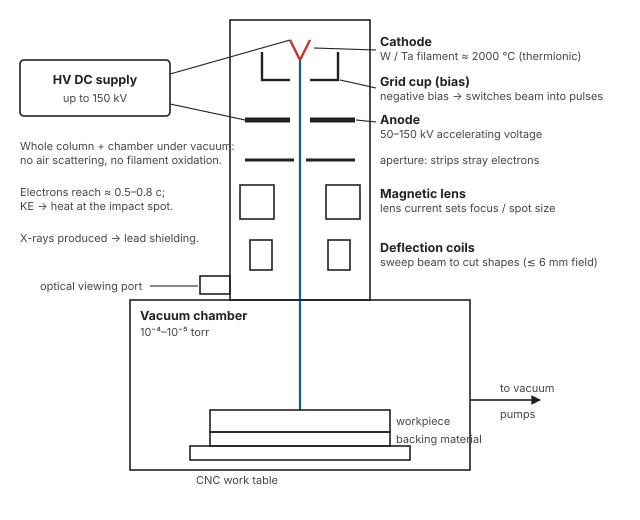

Unit 3 · Lesson 9 of 12 · ~22 min
Electron beam machining: drilling with electrons in a vacuum
Electrons accelerated to more than half the speed of light hit a spot a few hundredths of a millimetre wide. Their kinetic energy becomes heat, and the material vaporises.
Sketch and explain an EBM system, state how each parameter shapes the hole, derive MRR from the specific energy of vaporisation, and compare EBM with LBM.
Principle
EBM (thermal type) uses a stream of high-velocity electrons. Electrons are boiled off a hot cathode, accelerated by a high voltage, focused magnetically and fired in pulses at the work. On impact their kinetic energy turns into heat, which melts and mainly vaporises a tiny volume. Everything happens in a vacuum (Jain, p.220–221).
Unlike EDM, the work need not conduct: EBM machines metals, ceramics, plastics and even leather (Jain, p.224).
Jagadeesha's EBM-vs-LBM table says EBM can machine "only metals", but its own applications list includes perforating polythene sheets. Follow Jain (syllabus reading #2): EBM machines both conductors and non-conductors.
How a hole forms
- The beam strikes and locally heats the surface; material melts and vaporises at the impact point.
- The beam drills a narrow vapour capillary surrounded by molten metal.
- The beam breaks through into a backing material (synthetic or organic) under the work.
- The backing vaporises violently; its high-pressure gas blows the molten metal out of the hole.
Non-circular holes: deflect the beam around the outline by computer, or keep the beam still and move the CNC table (Jain, p.221).
The EBM system

- Electron gun. A tungsten or tantalum filament cathode heated to ~2000 °C emits electrons (thermionic emission). The negatively biased grid cup controls beam current and acts as the switch that makes pulses. The anode accelerates electrons to about 50–80% of the speed of light (Jagadeesha §8.13).
- Power supply. Accelerating voltage up to about 150 kV. Powerful guns run around 12 kW with pulse energies up to ~120 J (Jain, p.222–223).
- Beam control. An aperture strips stray electrons; a magnetic lens focuses the beam; deflection coils steer it.
- Vacuum system. 10⁻⁴–10⁻⁵ torr. Why: electrons would collide with and scatter off air molecules and lose energy; the hot filament would oxidise; and the vacuum keeps metal vapour from contaminating the column.
- Viewing optics and CNC table to position the beam precisely.
Process parameters
| Parameter | Range | Effect |
|---|---|---|
| Beam current | 100 µA – 1 A | Sets energy per pulse; more energy drills faster |
| Pulse duration | 50 µs – 10 ms (Jain) | Longer pulses: wider and deeper holes, thicker HAZ and recast (normally ≤ 0.025 mm) |
| Lens current | — | Sets working distance (gun to focal point) and spot size, hence hole diameter |
| Focal point position | below top surface | Controls hole shape along its axis: straight or tapered |
| Deflection signals | field ≲ 6 mm | Sweep the beam to cut non-circular shapes |
| Accelerating voltage | 50–150 kV | Beam power P = V × I; higher voltage permits deeper, narrower holes |
Jain p.223; Jagadeesha §8.14 and Table 8.4.
Derivation: MRR from specific energy
- A fraction \(\eta\) (cutting efficiency) of beam power \(P\) actually vaporises material. If \(W\) is the energy needed to vaporise unit volume:
\[ \text{MRR} = \frac{\eta\,P}{W} \tag{10.1} \]
- To vaporise unit volume starting at \(T_i\): heat the solid to melting, melt it, heat the liquid to boiling, then boil it:
\[ W = \rho\left[c_s(T_m - T_i) + L_f + c_l(T_b - T_m) + L_v\right] \tag{10.2} \]Jain writes the bracket terms directly as energy per unit volume (J/cm³). Specific heats are taken as constant.
- Cutting efficiency \(\eta\) is usually below 20% (Jain, p.224).
Worked example. A 2 kW beam drills steel at 15% efficiency. Assume: ρ = 7.8 × 10⁻³ g/mm³, cs = 0.5 J/g·K, cl = 0.82 J/g·K, Ti = 25 °C, Tm = 1500 °C, Tb = 2860 °C, Lf = 270 J/g, Lv = 6100 J/g. Find MRR.
Note that Lv is about three-quarters of the total. Vaporising costs far more than melting.
Tutorial Q18. Beam power 2 kW, spot diameter 0.5 mm, pulse duration 0.01 s. 30% of beam power goes to vaporisation. Material ρ = 7800 kg/m³, L ≈ 7.0 × 10⁶ J/kg. Estimate penetration per pulse.
Tutorial Q19. Required beam power 1.5 kW at an accelerating voltage of 150 kV. Find the beam current in µA.
Capabilities and applications
- Holes of about 0.1–1.4 mm diameter, up to ~10 mm deep, aspect ratio up to about 15:1 (Jain, p.224). Off-axis (inclined) holes are possible. A small burr can remain at the entry side.
- Mass perforation: hundreds to thousands of holes per part, e.g. thousands of <1 mm holes in thin turbine-engine combustor domes, and in a 5 mm cobalt-alloy fibre spinning head, about 100× faster than EDM (Jain, p.224–225).
- Filters and screens for food processing; spinnerets for synthetic fibres; wire-drawing die holes.
- Cooling holes in turbine blades; metering holes in diesel injector nozzles; fine gas orifices for nuclear reactors.
- Electron-beam lithography: pattern generation for integrated circuits.
Advantages
- Any material: conductive or not, any hardness
- Very fine, precise holes and slots; very fast for small holes
- No force, no tool wear; thin and fragile parts safe
- Beam steered electronically: easy automation
- Small HAZ and recast for short pulses
Limitations
- Very high equipment cost; skilled operator
- Vacuum pump-down time is non-productive
- Work size limited by the chamber
- X-rays produced: lead shielding needed
- Thin sections only (~10 mm); taper; recast, burr
- Low MRR; high specific energy
EBM vs LBM
| Aspect | EBM | LBM |
|---|---|---|
| Energy carrier | High-velocity electrons (KE → heat) | Photons (absorbed light → heat) |
| Medium | Vacuum essential | Air, gas, any transparent medium |
| Materials | Any; reflectivity irrelevant | Any non-reflective; Al and Cu difficult |
| Beam steering | Magnetic deflection: very fast patterns | Mirrors / CNC table |
| Efficiency | Higher | Very low (<1% machining) |
| Hazard | X-rays | Eye and skin radiation |
| Cost, throughput | Higher cost; batch-limited by vacuum chamber | Lower cost; works in open air |
Practise
5 marksWith a neat sketch, explain the generation and control of the electron beam in EBM, and list four applications.
Sketch: filament cathode, grid cup, anode, aperture, magnetic lens, deflection coils, vacuum chamber, work with backing, HV supply.
Generation: tungsten/tantalum filament heated (~2000 °C) emits electrons thermionically; the anode at up to ~150 kV accelerates them to ~0.5–0.8 c. The negatively biased grid cup controls beam current and pulses the beam.
Control: aperture removes stray electrons; magnetic lens (lens current) focuses the beam and sets spot size and working distance; deflection coils sweep it to cut shapes. Vacuum (10⁻⁴–10⁻⁵ torr) prevents scattering and filament oxidation. CNC table and optical viewing for positioning.
Applications: perforating thin sheets (filters, combustor domes), spinneret holes, turbine blade cooling holes, diesel injector metering holes, wire-drawing dies, EB lithography for ICs.
Quick check
1. What role does the grid cup play in the electron gun?
- Controls current and pulses the beam
- Focuses the beam to a spot
- Accelerates the electrons to full speed
- Deflects the beam around hole outlines
The negatively biased grid (Wehnelt) cup limits how many electrons pass, so it sets beam current and switches the beam on and off in pulses.
2. In MRR = ηP/W, the biggest part of W comes from…
- Heating the solid to melting
- The latent heat of fusion
- Heating the liquid to boiling
- The latent heat of vaporisation
For steel, Lv ≈ 6100 J/g out of about 8200 J/g total. Vaporising dominates.
3. What is the backing material for?
- Cooling the work after drilling
- Vaporising to expel molten metal
- Insulating the table from current
- Absorbing X-rays from the beam
When the beam breaks through, the backing vaporises; its high-pressure gas blows the melt out of the hole and protects the table.
4. Main productivity drawback of EBM?
- Electrode wear needing very frequent replacement
- Very slow drilling of small holes
- Vacuum pump-down time for each batch
- Only conductive materials can be cut
Every batch needs the chamber evacuated, which is non-productive time. Small holes themselves are drilled very fast.